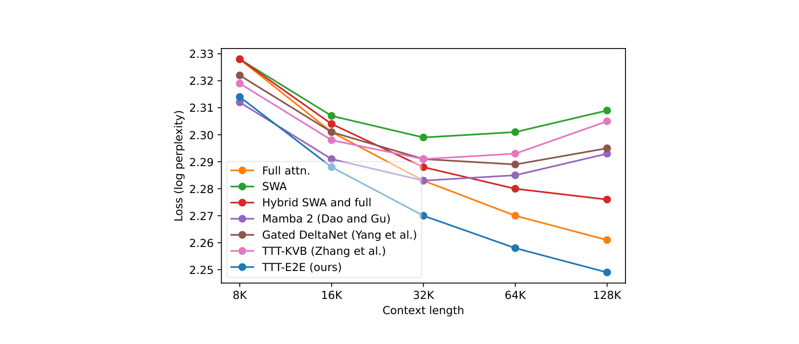
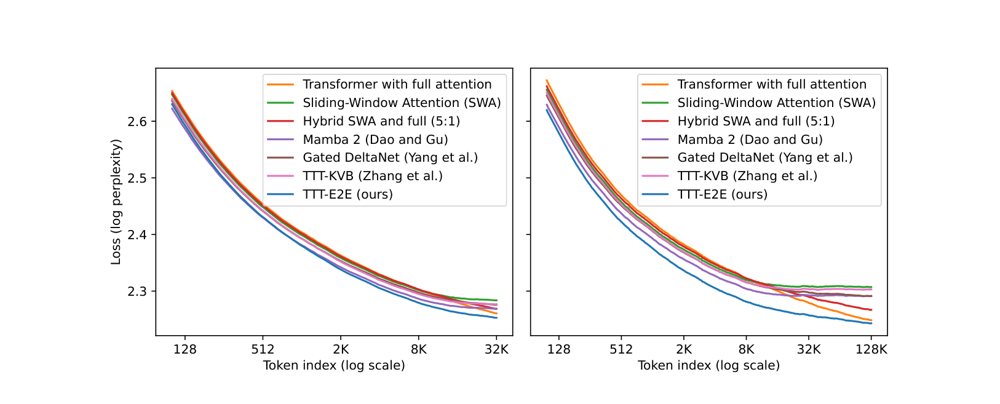
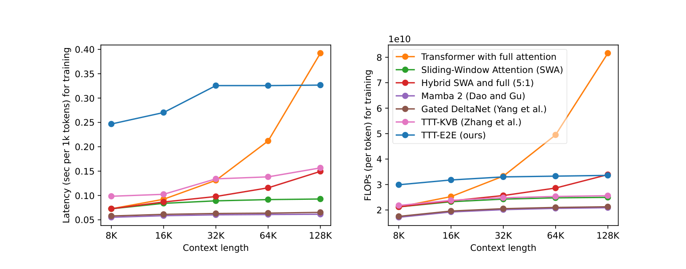

把长上下文从架构问题改写成持续学习问题
长上下文建模的主流叙事是架构设计：全注意力 $O(T^2)$ prefill 太贵，于是设计线性注意力、状态空间、滑窗混合。这篇论文的立场：这是持续学习（continual learning）问题——模型在测试时对给定的上下文继续做 next-token prediction，把上下文压缩进权重。架构退居其次：只要求一个标准 Transformer 加滑窗注意力（SWA）。
这个想法的朴素形态是动态评估（dynamic evaluation，Mikolov et al. 起源、Krause et al. 2018 扩展）：测试时在测试数据上继续训练。它缺一块——训练时的目标没有为"测试时会被更新"做准备。TTT-E2E 的补法是元学习：每个训练序列先被当作测试序列，在内环做 TTT，然后用 TTT 之后的平均损失在外环（梯度的梯度）优化初始化 $W_0$。
"E2E"因此有两个含义，各自对应一位前人：
- 测试时 E2E：内环直接优化网络末端的 NTP 损失——区别于 TTT-KVB 一系（Titans、MesaNet、Nested Learning 的共同组件）的逐层重建损失；
- 训练时 E2E：外环直接优化 TTT 之后的最终损失——区别于 dynamic evaluation 的"开箱即用"目标。

一个公式级的对照：两条"压缩"路径的分野
预训练本身也是压缩：$N$ token 的语料压进 $|\theta|$ 个参数。TTT 的主张是把同一机制延伸到测试时——上下文 $c$ 到来时，继续做 NTP，把 $c$ 压进增量权重。与既有路线的对照就此清晰：ICL 把 $c$ 放进 KV 缓存（无损、贵）；RNN 系把 $c$ 压进固定隐状态（便宜、有损、scaling 差）；DnD/D2L 把"适配算子"元学习成前向（快、受训练分布约束）；TTT-E2E 在测试时真做梯度下降——保留学习的适应性，用元学习买回稳定性。
玩具起点：删掉所有注意力的 Transformer
论文的教学设计值得学：为了隔离 TTT 的效果，基线是删掉全部自注意力层、只剩 MLP 的 Transformer——它没有对前文的记忆，等价于 bigram（只看前一个 token 的统计模型）。
式 (1)-(2)：测试时的在线梯度下降
$$\ell_t(W) = \mathrm{CE}\big(f(x_{t-1};W),\ x_t\big),\qquad W_t = W_{t-1} - \eta\, \nabla \ell_t(W_{t-1})$$$f$：无注意力基线；$W_0$：测试时初始权重。对每个 $t=1,\dots,T$ 依次更新，最后输出 $\hat p_{T+1} = f(x_T; W_T)$。CE=交叉熵；测试损失即 log 困惑度。

元学习：让 $W_0$ 为"将被更新"做好准备
式 (3) vs 式 (4)：E2E 与 naive 的分水岭
$$L(W_0;X) = \frac{1}{T}\sum_{t=1}^{T}\ell_t(W_{t-1}) \qquad\text{vs}\qquad L_{\text{naive}}(W_0;X) = \frac{1}{T}\sum_{t=1}^{T}\ell_t(W_0)$$式 (3) 的训练损失 = 测试损失（E2E）；式 (4) 是"静态模型思维"的直译——假设 $W_0$ 不会被更新。最小化式 (4) 不保证低测试损失。TTT-naive 正是 dynamic evaluation 文献的主流做法；玩具实验里它只比 bigram 好一点。
对式 (3) 求梯度需要梯度的梯度（式 (2) 本身含梯度算子）；现代自动微分框架对此开销很小。元学习术语：对 $L$ 的梯度步叫外环，对 $\ell$ 的叫内环。与 MAML 的差异在问题设定：MAML 内环学整个数据集、外环需要数据集集合；这里把语言建模本身铸成"学习如何学习"——任何序列都同时是数据与任务。
"匹配训练与测试行为"是本文一切设计的总纲
回看四个失败者：TTT-naive 输在训练/测试行为错配（训练时假装 $W$ 不动）；TTT-KVB 输在测试时目标错配（逐层重建 ≠ 末端 NTP）；$b{=}16$ 输在 batch 内 bigram 化（更新粒度与记忆粒度错配）。TTT-E2E 的每个设计都是在消除一类错配。这个视角比"又一种长上下文架构"的读法准确得多——架构改动只是配角（§6 的 b=8K 消融将证明这一点）。
工程化：mini-batch、滑窗与三个实现细节
式 (5)-(6)：mini-batch 内环与外环
$$W_i = W_{i-1} - \eta\,\frac{1}{b}\sum_{t=(i-1)b+1}^{ib} \nabla \ell_t(W_{i-1}),\qquad L(W_0;X) = \frac{1}{T}\sum_{i=1}^{T/b}\sum_{t=(i-1)b+1}^{ib}\ell_t(W_{i-1})$$$b{=}1$ 退化为式 (2)(3)。mini-batch 解决两个问题：内环多步不可并行（效率）、单 token 梯度易爆（稳定性）。
三个实现细节（§6 有消融）
- 只 TTT MLP 层：embedding/归一化/注意力在测试时冻结——更新它们会使外环不稳定；
- 只 TTT 最后 1/4 的块：更新更多层 = 更大存储但更多反传算力（§6：1 或 3 层不 scale，6 或 12 层 scale，12≈6）；
- 被更新的块内放两个 MLP：一个被 TTT 更新，一个是静态"安全存储"保留预训练知识；全网络 hidden 维度按比例缩减使总参数量与基线持平（公平比较）。

从 TTT-KVB 三步走到 TTT-E2E：一张对偶性地图
§2-4 从"NTP 式 TTT"出发补训练时的 E2E；这一节反着走：从 TTT-KVB（训练时已 E2E）出发补测试时的 E2E。两条路在同一点汇合——对偶性是本文方法论上最漂亮的部分。
式 (7)-(9)：TTT-KVB 及其简化输出规则
$$\ell^{(l)}_t\big(W^{(l)}_{t-1}\big) = \big\|\, g\big(\theta^{(l)}_K x^{(l)}_t;\ W^{(l)}_{t-1}\big) - \theta^{(l)}_V x^{(l)}_t \big\|^2,\qquad z^{(l)}_t = g\big(\theta^{(l)}_Q x^{(l)}_t;\ W^{(l)}_t\big)$$ $$\text{简化：}\quad z^{(l)}_t = g\big(\theta^{(l)}_K x^{(l)}_t;\ W^{(l)}_{t-1}\big)$$$g$：MLP，其权重 $W$ 即该层隐状态；$\theta_K,\theta_V,\theta_Q$：外环参数（类比 K/V/Q 投影）。KVB = "测试时学习从 key 预测 value"——把注意力显式存 (k,v) 对改为隐式学这个关联。家族谱系（论文脚注）：$g$ 线性 → DeltaNet；梯度对 $W_0$ 而非 $W_{t-1}$ → 线性注意力；非参数核估计 → 自注意力。MesaNet、Titans、Nested Learning 都是 KVB 变体。
终步的算账逻辑：多头上 LoRA（低秩增量适配）的小 MLP（合计 18M）看似省反传，但梯度要先穿过其上方的大 MLP 才能继续向下——上游梯度的准备成本是大头。少更新几个块、每块放大状态更划算：状态 5×（18M→88M）、prefill 延迟减半（0.017→0.0086 s/1k tok，H100）。8K 长度下状态大小的收益看不出来（Table 1 差异不显著）；§6 的层数消融在长度轴上补上了证据：状态小 → 上下文 scaling 差。
上下文 scaling：优势恒定，且部分来自实验协议

"RNN 在 32K 之后退化"部分是微调批次方差的伪影
证据：附录 Figure 9 自己解释：SWA/Mamba 2/GDN/TTT-KVB 在 32K 后损失变差，是因为更长上下文下每个外环 batch 的序列数更少、微调梯度方差更高；而这些方法无法把更长上下文的收益兑现，方差之害压过收益。推理：Figure 1 的"RNN 不随上下文 scale"叙事里，混入了一个微调批次协议的效应——换一种批次协议（如按 token 而非按序列配平），退化的幅度可能不同（"伪影"一词偏重：论文的归因是方差×收益无法兑现的交互，非纯 artifact）。影响：TTT-E2E 的逃逸是真本事（它能兑现长上下文收益来抵消方差），但对照线上"退化"的幅度不应被读成方法的纯内在性质。补救：补一个 token-配平的微调协议对照。

算力 scaling：小预算吃亏，760M/48B 之后与全注意力同趋势

两个 regime 的分界：小预算区，TTT-E2E（及 GDN）对全注意力的优势随算力增加而收窄——论文引 Kaplan 系 scaling law 的已知结论"全注意力在小算力下欠佳"来解读：这不是 RNN 在大算力下变强，而是全注意力在小算力下偏弱。大预算区（>760M、>48B token），TTT-E2E 的蓝线走平——与全注意力同趋势，这正是对生产级训练的外推主张。GDN 呈同样趋势的两个解释：TTT-E2E 本身可视为混合 RNN（§5）；固定隐状态模型共享同一 scaling 行为。
scaling 趋势对 tokenizer 与数据年份敏感——且证据是轶事级的
证据：论文自述三点观察：换 Llama 3 tokenizer（2024）使 3B 优势 +0.01；SlimPajama（2023）下 token-scaling 出现上翘、换 DCLM/FinewebEdu（2024）后趋势与全注意力一致。推理："大预算区同趋势"这一核心主张对数据新鲜度/质量敏感，而支撑证据是轶闻（anecdotal），未做系统消融。影响：外推到生产级训练时，数据管线是隐藏变量。补救：跨数据集的正式 scaling 研究；论文的 self-generation 提议（其动机是 RNN 门控类比，本博客将其与数据质量敏感性勾连，见 Q4）可顺带检验。
按 token 位置分解损失："专注当下"的直接证据

两个同时成立的观察构成一个表面悖论：32K 处窗口末端差距很小——按趋势外推会猜 128K 处交叉；实际没有（128K 是"拉伸"而非"延续"）。机制解释是全文最漂亮的一段论证：
- 在 $t < 1$K（第一个内环 batch 之前），TTT-E2E 与全注意力的计算图完全相同，只差权重——但 TTT-E2E 的损失低得多；
- 解释：全注意力的权重必须为上下文内所有未来 token 做准备——"对所有可能的未来都好"限制了"对任何一个未来特别好"的能力；TTT 权重只需对当前 mini-batch 好，因为未来的 token 有未来的权重来伺候。这是 TTT 框架的纲领性直觉：focus on the present（§12 谱系中的最近邻 TTT、自监督 TTT 共享同一直觉）。
把"专注当下"读成一种容量论
静态模型容量 $\mathcal{C}$ 要覆盖整个未来分布；TTT 模型的静态容量只需覆盖当前 batch，另有 $T/b$ 次更新分摊未来——等效容量随上下文增长。这给 §9 的 NIAH 失败一个预言：检索类任务要求对"分布中某个低概率点"无损保持——恰好是压缩会牺牲的部分。同一条原理同时解释了 TTT-E2E 的赢面（语言建模）与输面（精确召回），这是好理论的样子。
NIAH：诚实的惨败，以及它证明了什么
3B@128K，RULER（长上下文评测套件）的三个 S-NIAH 任务（大海捞针：在长干扰文本中检索一句无关目标串——pass-key / 数字 / UUID 检索）：
| 方法 | S-NIAH-1（pass-key） | S-NIAH-2（数字） | S-NIAH-3（UUID） | ||||||||||||
|---|---|---|---|---|---|---|---|---|---|---|---|---|---|---|---|
| 8K | 16K | 32K | 64K | 128K | 8K | 16K | 32K | 64K | 128K | 8K | 16K | 32K | 64K | 128K | |
| 全注意力 | 1.00 | 1.00 | 1.00 | 1.00 | 0.99 | 0.99 | 1.00 | 1.00 | 1.00 | 0.86 | 0.64 | 0.64 | 0.67 | 0.83 | 0.64 |
| SWA | 1.00 | 0.50 | 0.26 | 0.13 | 0.07 | 1.00 | 0.43 | 0.28 | 0.16 | 0.05 | 0.57 | 0.41 | 0.24 | 0.09 | 0.05 |
| Mamba 2 | 0.99 | 0.49 | 0.26 | 0.13 | 0.07 | 0.99 | 0.43 | 0.28 | 0.16 | 0.05 | 0.77 | 0.36 | 0.24 | 0.08 | 0.04 |
| Gated DeltaNet | 1.00 | 0.50 | 0.26 | 0.13 | 0.07 | 1.00 | 0.43 | 0.27 | 0.16 | 0.05 | 0.91 | 0.45 | 0.23 | 0.07 | 0.03 |
| TTT-KVB | 0.98 | 0.43 | 0.22 | 0.10 | 0.01 | 1.00 | 0.43 | 0.27 | 0.16 | 0.05 | 0.74 | 0.34 | 0.23 | 0.06 | 0.04 |
| TTT-E2E | 1.00 | 0.46 | 0.24 | 0.13 | 0.06 | 0.99 | 0.43 | 0.28 | 0.16 | 0.05 | 0.77 | 0.44 | 0.24 | 0.10 | 0.03 |
NIAH 惨败是压缩动机的直接代价：检索目标恰是"看似无关"的细节。TTT-E2E 与 Mamba 2/GDN 同档（0.03–0.07），测试时训练没带来召回魔法——它的内环做的也是 NTP 压缩。
摘要的"同趋势"主张需要加上召回任务的脚注
证据：摘要说 "scales with context length in the same way as Transformer with full attention"——指标是语言建模损失；Table 2 显示同款模型在检索任务上与全注意力的差距是 16.5×（0.06 vs 0.99）。推理："同趋势"对困惑度成立、对召回不成立——两条主张的适用域不同，摘要未区分。影响：只读摘要的读者会高估适用范围。补救：以 Figure 6（损失）+ Table 2（召回）成对引用。
效率全景：prefill 赢、decode 拆项、训练输

- Prefill（一次性读入上下文）：恒定延迟，128K 快 2.7×（H100）。用的是标准基础设施——隐状态就是普通 MLP 层，可用标准工具跨 GPU 分片，无需定制 kernel；对照：TTT-KVB 被迫用多头+LoRA 压状态，Mamba 2/GDN 要为显存 I/O 写定制 kernel。
- Decode（逐 token 生成）：解码 token 填满一个 $b{=}1$K batch 才做一次 TTT 步（此时延迟=一次 prefill），期间就是普通 SWA 解码——总延迟 = SWA 解码 + 周期性 TTT 步，两项都有数，论文不再单测。
- 训练（限制项）：grad-of-grad 基建不成熟；8K 慢 3.4×，且延迟随 $\log(T)$ 增长（时间维梯度检查点）。两个方向：定制注意力 kernel（cuDNN FlashAttention 不支持二阶梯度）；从预训练 Transformer 初始化——RNN 文献的常规操作（distill→finetune），让 TTT-E2E 只占总训练算力的一小部分。
"从预训练 Transformer 初始化"与 E2E 叙事之间的张力
证据：训练延迟一节建议用预训练 Transformer 初始化 TTT-E2E（引 RNN 蒸馏实践 [Kasai 2021, Bick 2024, Wang 2024]）。推理：若生产路径是"FA 预训练 → 蒸馏/初始化 → TTT 微调"，那么对外主张的主实验（从头 E2E 元训练）就不是生产配置；论文主实验的价值随之从"可部署配方"转为"原理验证 + scaling 证据"。影响：成本核算要按三段管线重算。补救：论文已把它列为 future work——跟踪其后续实验即可。
另两条实验边角：长解码用 Qwen3-8B-Base 当裁判（8K Books 预填 + 8K 解码），TTT-E2E 全程更低；prefill/decode 边界处损失跳升后回落（裁判对生成风格的适应）。评测用 base 模型 + repetition penalty 1.1——论文自认离真实长解码场景（SFT/RL 之后）有距离。
批判评估：八条带证据的保留意见
索引：F1（摘要话域，见 §9）、F2（微调批次方差与"RNN 退化"叙事，见 §6）、F3（数据/tokenizer 敏感性的轶事级证据，见 §7）——证据与补救在各章原位，不重复。以下五条为本章展开。
终版方法的关键表内优势不显著
证据：Table 1 最后一步 −0.001，低于论文自设的 0.001 显著性阈值。推理：TTT-E2E 对 all-layers-MH 的辩护实际是状态 5× 与延迟减半——即效率论证，不是质量论证；质量主张依赖 §6 的长度轴与 §7 的算力轴实验。影响：单看 Table 1 会以为四种 TTT 差不多——表内确实差不多。
训练分布被裁剪成"只含 ≥8K token 的文档"
证据：DCLM 预训练语料丢弃所有 <8K 文档，理由是避免文档边界处重置被更新的 MLP（工程原因：重置拖慢训练）。推理：预训练分布从此不含短文档混合序列——真实部署的上下文常是多文档拼接；TTT-E2E 在"短文档高频重置"负载下的行为未测。影响：应用场景的适用性存疑。补救：文档边界重置策略的消融。
学习率只对全注意力基线做了网格搜索
证据：附录 B——为省算力只扫 FA 基线，4e-4 对所扫的 [760M,1B,3B]×[32K,128K] 全部最优；预训练配方继承 GPT-3 并按 Mamba 2 调整（5× LR）。推理：TTT 方法的最优外环 LR 可能不同；基线与方法共享超参未必对双方都公平。影响：对照组强度的上限。补救：对 TTT-E2E 单独扫 LR。公平性注记：论文给基线升级了 FA3 kernel 与 QK norm（GDN 8K 预训练 2.814→2.809、32K 微调 2.691→2.683）——对照是加强版，这部分加分。
"双 MLP 安全存储"没有单独消融
证据：三细节（MLP-only、1/4 层、双 MLP）中仅 $k$/$b$/层数有消融（§3.2 的三个面板）；MLP-only 与双 MLP 均未单独消融，且双 MLP 与 1/4 层消融耦合（被更新块内必含静态 MLP）。推理：忘记预防（catastrophic forgetting 防御）这一设计动机未被隔离证明。影响：三细节中一个的因果链缺失。
记忆层级与五容器谱系：这篇论文在设计空间中的坐标
论文结论的记忆层级（逐字核对）
TTT-E2E = SWA 基线 + 测试时更新的权重。测试时更新的权重 = 长期记忆；滑窗 = 短期记忆——两类记忆互补，更强的短期记忆会进一步改善组合（结论原文）。$k \ge b$ 的约束就是这个层级的接口条件：滑窗必须覆盖内环 batch，短期记忆才能在长期记忆跟上之前兜住局部上下文。
把上下文放进模型的五个容器（本仓库系列全景；DnD=Drag-and-Drop LLMs、D2L=Doc-to-LoRA、δ-mem=Efficient Online Memory，均已有配套解读；inplace-TTT=In-Place Test-Time Training，本仓库存原文）：
本文对领域的一个纠偏：长上下文 TTT ≠ 记忆，≠ 架构设计
相关工作节的两个"副作用"指控值得单独记：因为 KVB 目标模仿自注意力存 (k,v)，很多人以为长上下文 TTT 是关于记忆；因为 TTT 层是注意力的 drop-in 替换，很多人以为它是架构设计。本文用 §5 的损失替换实验（−0.013，全表最大跳变）证明：去掉 KVB 记忆目标、保留 NTP，效果反而更好；用 b=8K 消融证明：架构改动本身近乎无效（2.825 vs 2.827）。它展示的是"持续学习问题表述"的力量——这与第 1 章的立场首尾呼应。
自主科研问题：五个可动手的方向
"专注当下"增益的容量论检验
第 8 章的解释（静态容量只需覆盖当前 batch）给出可检验预言：early-token 增益应随被更新参数量（88M）与 $b$ 单调变化——$b$ 越大、单次更新的"当前"越长，增益应后移且变浅。
下手处：复用 Figure 6 的分解流程，扫 $b \in \{0.5K, 1K, 2K\}$ × 更新层比例 $\{1/8, 1/4, 1/2\}$，画"增益曲线峰值位置"随容量的移动。零新方法成本，纯算力实验。
needle 信息死在哪一层：压缩失败的空间定位
NIAH@128K = 0.06，但 88M 参数的更新 MLP 难道装不下一句 magic number？对内化后的 MLP 做线性探针，定位 needle 是否被编码（第 6 层 vs 最后 1/4 块）、是被"压缩掉"还是"读不出"（对比 δ-mem 的 8×8 状态：64 个标量都能部分恢复 needle）。
下手处：NIAH 训练后逐层探针 + 消融"TTT 目标里混入 1% 的 needle 复述任务"（给压缩一个召回目标），测损失-召回权衡曲线。
蒸馏初始化能否闭合"从头 E2E"的差距
论文的加速方向（FA 预训练 → 初始化 TTT-E2E）未实验。定量问题：内环步数/学习率如何随初始化质量缩放？RNN 蒸馏文献（Kasai 2021、Bick 2024、Mamba-in-Llama 2024）的结论是蒸馏后 RNN 可恢复大部分质量——TTT-E2E 的隐状态是 MLP 权重（与教师同构），蒸馏应更直接。
下手处：同一 FA 教师分别蒸馏到 TTT-E2E 与 GDN（Mamba-in-Llama 协议），比 Books@128K 损失与训练延迟——同时检验 F5 的叙事张力。
自生成 TTT：把 RNN 门控装进内环
论文的方向性提议：TTT on self-generated tokens（对当前 batch 的过滤/复述，或对先前 batch 的回顾），类比 RNN 门控对虚假输入的屏蔽（LSTM/GRU 文献）。形式化：内环损失从 $\ell_t$ 换成 $\ell_t$ 与自生成重构损失的加权和，权重本身是外环参数。
下手处：760M 玩具规模先行——自生成数据由当前模型 top-p 采样 + 困惑度过滤；对照门控消融（等价于学一个软掩码）。这可能同时改善 F3（数据质量敏感）。
scaling 边界的参数比定律
TTT-E2E（整网 = 一个 RNN 层）与 GDN（每层一个 RNN）在 compute-scaling 上同趋势、边界都在 ~760M/~48B（Figure 5）。假说：边界由外环参数量 : 内环状态量之比决定——E2E 的状态是权重本身（88M），GDN 的状态是线性隐状态；两者在边界处的比值可能守恒。
形式化：设 $\rho = |\theta_{\text{outer}}| / |W_{\text{state}}|$，假说边界 $C^*(\rho)$ 满足幂律；用 5 个模型规模 + 层数消融（1/8→1/2）拟合 $C^*$。注意：~760M/~48B 的边界是 TTT-E2E 的实测值，GDN 只是"同趋势"，$\rho$ 跨架构的定义尚需对齐——本问是纯思辨，价值在选型公式：若成立，它给出"多少算力值得上 TTT"的判据。
小白 → 学者：十二天路线图
第 1-2 天：谱系打底
dynamic evaluation（Krause 2018）→ TTT 三形态（最近邻/自监督/序列）→ fast weights（Hinton & Plaut 1987；Schmidhuber 1992 FWP）→ Clark et al. 2022（方法上最近的前辈）。每篇一页笔记，重点记"内环目标"与"外环目标"。
第 3-4 天：复现玩具实验
附录 A 全公开：2 块、384 维、DCLM@128。亲手跑出 Figure 2 的四条线（FA/无注意力/naive/E2E），亲眼看到 naive 与 E2E 的分岔——这是全文最重要的一张直觉图。
第 5-7 天：复现 Table 1 三步推导
760M、DCLM、8K：KVB → 简化输出 → NTP 替换 → 终版。检验 −0.013 的关键跳变是否可复现（0.001 显著性阈值自设）。
第 8-9 天：跑一个消融
层数消融（1/3/6/12 层）对上下文 scaling 的影响——F8 的双 MLP 解耦消融可以顺手加上。
第 10-12 天：Q1 或 Q3 出数据
Q1（容量论检验）纯算力；Q3（蒸馏初始化）借用 Mamba-in-Llama 协议。写 proposal：形式化、最小实验、预期曲线。
A. 内环：mini-batch TTT 更新（式 5，经维度自检）
import torch
def ttt_inner_loop(model, ctx_ids, b=1024, eta=1e-3):
# ctx_ids: [T+1]；只对最后 L/4 块的 MLP 开梯度
updated = [p for n, p in model.named_parameters() if mlp_tail(n)]
for p in model.parameters(): p.requires_grad_(False)
for p in updated: p.requires_grad_(True)
W = model.state_dict() # W_0：测试时初始权重
T = ctx_ids.shape[0] - 1
for i in range(1, T // b + 1): # 式(5)：T/b 个 batch
seg = ctx_ids[(i-1)*b : i*b + 1] # 含边界 token
loss = ntp_loss(model, seg) # ℓ_t 之和（CE）
g = torch.autograd.grad(loss / b, updated)
with torch.no_grad():
for p, gp in zip(updated, g): p -= eta * gp # W_i = W_{i-1} - η∇
return model # 内化后的 θ_cB. 外环：元学习 E2E 目标（式 6，grad-of-grad）
def outer_loss(model0, seq, b=1024):
model = clone(model0) # W_0
total = 0.0
T = len(seq) - 1
for i in range(1, T // b + 1): # 式(6)：内环过程中累加
seg = seq[(i-1)*b : i*b + 1]
total = total + ntp_loss(model, seg) # ℓ_t(W_{i-1})：更新前权重下的损失
grad_step(model, seg) # 内环：W_i = W_{i-1} - η∇
return total / T # L(W_0; X)——外环对此求导（create_graph=True）
# 关键：外环梯度的被求导对象是"TTT 之后"的损失（E2E），
# 而 TTT-naive 的目标是 Σ ℓ_t(W_0)——训练时假装权重不动（式 4）。C. TTT-KVB 层（式 7-8：g 线性时退化为 DeltaNet）
class KVBLayer(nn.Module):
def __init__(self, d, eta=1e-2):
super().__init__()
self.W0 = nn.Parameter(torch.eye(d) * 0.1) # 隐状态 = g 的权重 W [d,d]
self.thK = nn.Linear(d, d, bias=False) # θK / θV / θQ：外环参数
self.thV = nn.Linear(d, d, bias=False)
self.thQ = nn.Linear(d, d, bias=False)
self.eta = eta
def _g(self, x, W): # g 显式接收快权重 W
return W @ self.thK(x) # 线性 g → DeltaNet（论文脚注①）
def step(self, W, xt): # 式(7)：一层 TTT 的内环
pred = self._g(xt, W) # g(θK x; W_{t-1})
target = self.thV(xt)
loss = ((pred - target) ** 2).sum() # KVB 重建损失（逐层！）
return W - self.eta * torch.autograd.grad(loss, W, create_graph=True)[0]
def forward(self, X): # X: [T, d]
W = self.W0
outs = []
for xt in X:
W = self.step(W, xt)
outs.append(self._g(xt, W)) # 式(8)：更新后输出（可简化为式9）
return torch.stack(outs)D. 两阶段训练日程（附录 B）
for stage, (data, ctx, theta) in enumerate([(dclm_ge8k, 8K, 500K), (books, target_ctx, rope_theta(target_ctx))]):
train(model, data, ctx=ctx, rope_theta=theta,
tokens=1.0 if stage==0 else 0.05, # 微调=预训练的 5%
batch=1.0 if stage==0 else 2.0, # 微调双倍 batch
inner=1, outer=1) # 内环 b=1K，外环 grad-of-grad结语
TTT-E2E = SWA 基线 + 测试时真梯度（内环）+ 二阶元学习（外环）。赢：损失 scaling 对齐全注意力、128K prefill 快 2.7×、纯标准基建；输：NIAH 0.06、训练 @8K 慢 3.4×、对数据/tokenizer 敏感。跟踪 Q1（容量论检验）、Q3（蒸馏初始化）、Q5（参数比定律）。